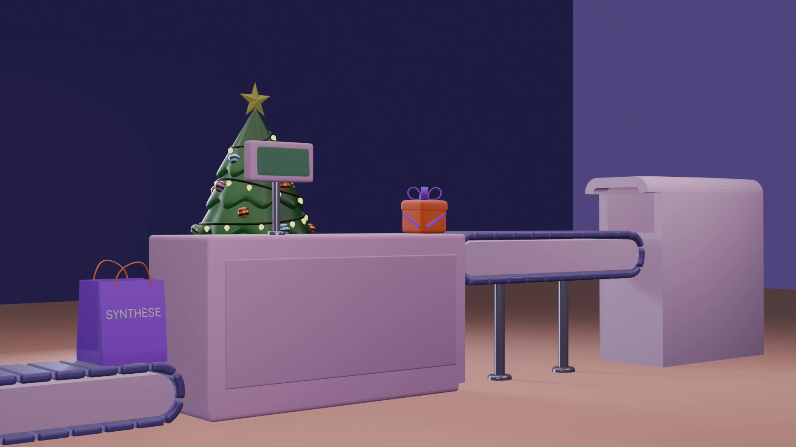
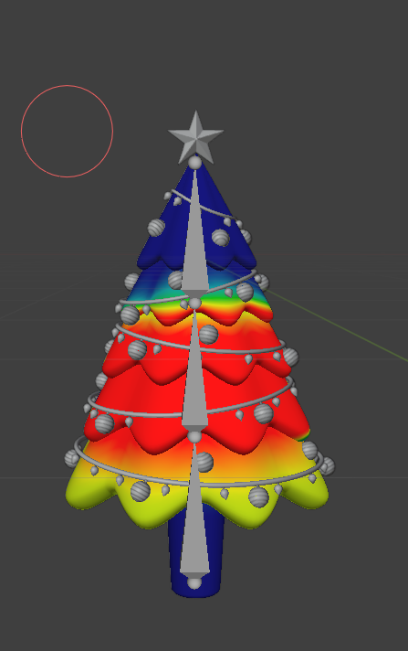
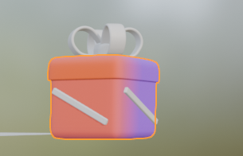
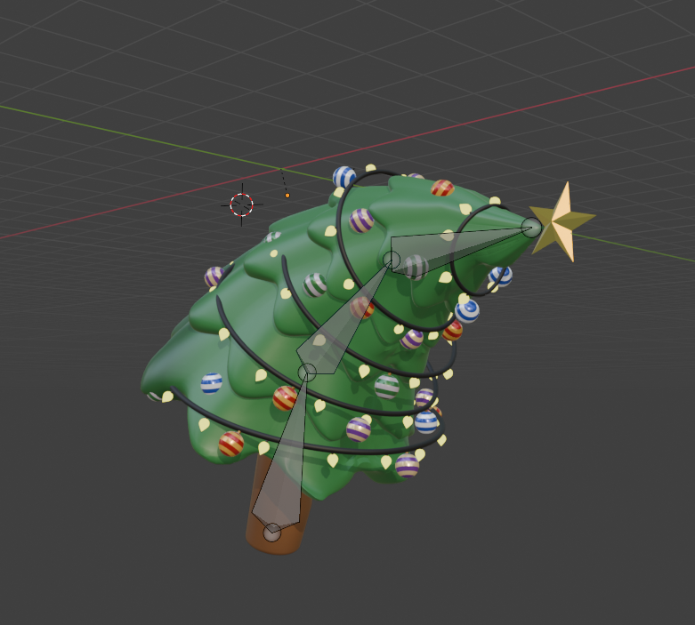
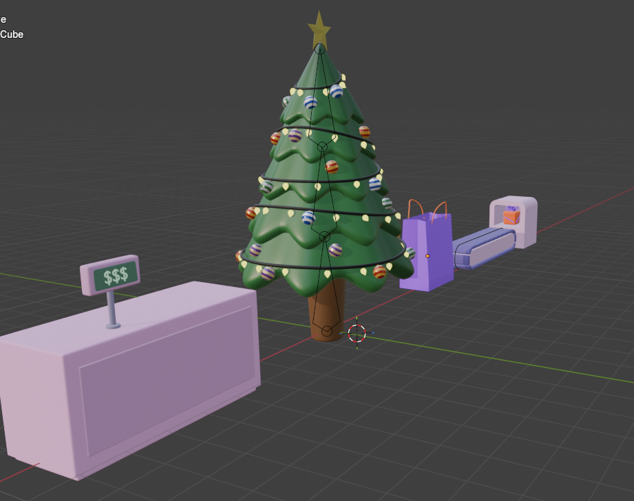

2025 / Blender Animation
Seasons Greetings

Overview
Project description
Seasons Greetings is a Blender animation conceived as a different kind of Christmas card, shaped by my experience working retail during the holiday season. It reflects the repetitive rhythm of that labor from the employee's side.
Everything in the animation was made by me in Blender. The soundtrack uses the copyright-free 1922 song When the Christmas Chimes are Ringing by Lewis James, and the piece is designed as a seamless loop.
Process
Process
I created this animation entirely in Blender, building the scene, objects, and loop structure from scratch. The process centered on repetition and timing, with careful attention to motion so the piece could function as a seamless loop while reinforcing the monotony of holiday retail labor. The process required a lot of refinement and testing to produce a final version I was satisfied with.


Process documentation
Stills and an earlier test animation from the development process.


Final animation
The completed looping animation.
Project Files